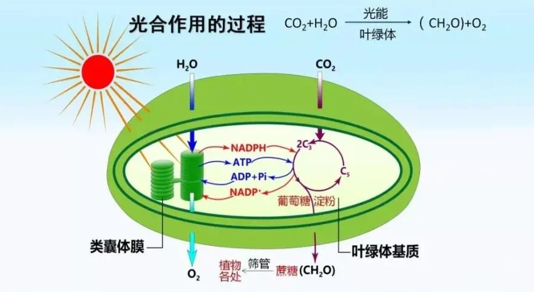
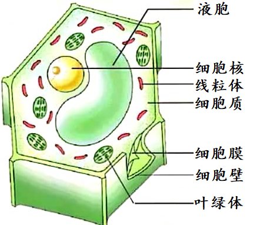
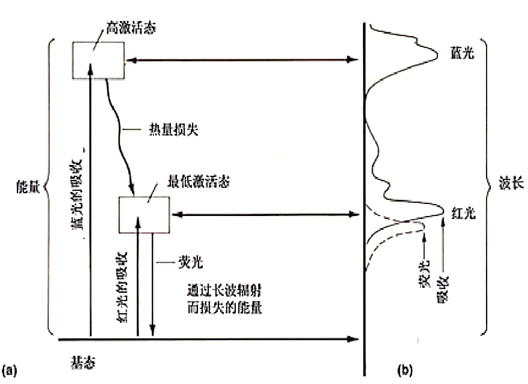

光合作用 · 概述与光反应
一、光合作用研究简史
光合作用（Photosynthesis）是光能自养生物利用光能，将CO₂和H₂O转化为有机物（糖类），同时释放O₂的过程。总反应式：6CO₂+12H₂O → C₆H₁₂O₆+6O₂+6H₂O（光能/叶绿体）。
光合作用研究史上的关键实验：
- 1648 van Helmont：柳树盆栽实验，5年仅浇水，柳树增重74.4kg，土壤仅减少57g。结论：植物生长主要靠水（但忽略了CO₂和矿质营养）。
- 1771 Priestley：薄荷枝条实验。置于密闭玻璃罩中，薄荷可"修复"被蜡烛燃烧污染的空气。发现植物释放O₂。
- 1779 Ingenhousz：重复Priestley实验，发现只有光照下绿色植物才能释放O₂，暗处则释放CO₂。首次证明光对光合作用的必要性。
- 1804 de Saussure：定量实验，证明CO₂和H₂O都是光合作用底物。
- 1862-1864 Sachs：用碘液检测淀粉，证明光合作用产物是淀粉，且叶绿体是光合作用场所。
- 1882 Engelmann：水绵+好氧菌+棱镜分光实验，证明作用光谱与叶绿素吸收光谱一致。
- 1931 van Niel：比较光合细菌，提出光合作用释放的O₂来自H₂O而非CO₂。
- 1937 Hill：离体叶绿体在光照下，以Fe³⁺为电子受体，可释放O₂（Hill反应）。证明O₂释放与CO₂固定是分离的两个过程。
- 1941 Ruben & Kamen：用¹⁸O同位素标记，H₂¹⁸O→¹⁸O₂，证实O₂来源于H₂O。
- 1954-1958 Calvin & Benson：用¹⁴CO₂和双向纸层析，追踪光合碳固定途径，阐明Calvin循环。获1961年诺贝尔化学奖。
二、光合色素
光合色素是吸收光能并参与光合作用光化学反应的色素分子。主要分为三大类：
- 叶绿素（Chlorophyll）：
- 叶绿素a（Chl a）：所有光合生物（除光合细菌）均含有，是光合作用反应中心色素。四吡咯环（卟啉环）中心为Mg²⁺，第IV环上为甲基（-CH₃）。在红光区最大吸收~680nm（PSII）或~700nm（PSI）。
- 叶绿素b（Chl b）：存在于高等植物、绿藻、裸藻。第IV环上为甲酰基（-CHO）。天线色素，收集光能传递给Chl a。Chl a/b比值随光照条件变化（阴生叶Chl b更多以捕获更多光）。
- 叶绿素c（硅藻、褐藻）、叶绿素d（红藻）、细菌叶绿素a/b（光合细菌，吸收红外光>800nm）。
- 类胡萝卜素（Carotenoids）：
- 胡萝卜素（Carotene）：橙黄色，β-胡萝卜素是维生素A的前体。吸收蓝紫光（400-500nm）。
- 叶黄素（Xanthophyll）：含氧胡萝卜素衍生物。有光保护作用——通过叶黄素循环（violaxanthin↔antheraxanthin↔zeaxanthin）耗散过量光能（非光化学淬灭，NPQ）。
- 藻胆素（Phycobilin）：存在于蓝藻和红藻中。藻蓝蛋白（phycocyanin，蓝色）和藻红蛋白（phycoerythrin，红色）。与蛋白质共价结合形成藻胆体（phycobilisome），构成PSII的天线系统。吸收绿-黄光（蓝藻和红藻利用绿光穿透深水层的能力）。
吸收光谱与作用光谱：
- 吸收光谱（Absorption Spectrum）：色素溶液对不同波长光的吸收率。Chl a在蓝紫光区（~430nm）和红光区（~662nm）有吸收峰，绿光区（~550nm）吸收最少（因此叶呈绿色）。
- 作用光谱（Action Spectrum）：不同波长光的光合作用效率（以O₂释放量或CO₂固定量衡量）。1882年Engelmann将水绵与好氧菌置于棱镜分光的不同波长光下，好氧菌聚集在红光区和蓝紫光区，与叶绿素吸收光谱一致。
- 红降现象（Red Drop）：波长>680nm时，虽然Chl a仍吸收光，但光合效率急剧下降。证明存在两个光系统协同工作。
- 爱默生增益效应（Emerson Enhancement Effect）：同时照射远红光（>680nm）和较短波长红光（~650nm），光合效率大于单独照射之和。证明PSI和PSII串联工作。
- 光合单位（Photosynthetic Unit）：由约200-300个天线色素分子（捕光复合体LHC）+ 1个反应中心组成。LHCII（主要捕光复合体）是三聚体，每个单体含14个Chl a、Chl b和类胡萝卜素。
三、光合作用的光反应——Z型电子传递
光反应（Light Reactions）发生在类囊体膜上，将光能转化为化学能（ATP和NADPH），同时裂解水释放O₂。核心是Z型电子传递链（Z-scheme），由PSII、Cytb₆-f、PSI和ATP合酶四个膜蛋白复合体组成。
PSII（光系统II，P680）：
- 反应中心色素：P680（Chl a二聚体，吸收峰680nm）
- 核心复合体：D1/D2蛋白+CP43/CP47天线蛋白
- 放氧复合体（OEC）：位于类囊体腔侧，含Mn₄CaO₅簇（锰簇）。催化水裂解：2H₂O→O₂+4H⁺+4e⁻。每释放1个O₂需积累4个氧化当量（Kok循环，S₀→S₁→S₂→S₃→S₄→S₀，S₄自发释放O₂并回到S₀）。
- 电子传递：P680*→Pheo（去镁叶绿素，pheophytin）→Q_A（紧密结合质体醌）→Q_B（可移动质体醌）。Q_B接受2个电子和2个H⁺后形成PQH₂，离开PSII进入PQ池。
- PSII是除草剂的重要靶点——敌草隆（DCMU）和莠去津（atrazine）竞争Q_B结合位点，阻断电子传递。
Cytb₆-f复合体（细胞色素b₆-f复合体）：
- 功能类似于线粒体复合体III，将电子从PQH₂传递给质体蓝素（PC），同时将H⁺从基质泵入类囊体腔
- 通过Q循环机制，每传递2个电子泵出4个H⁺
- 含细胞色素f（c型细胞色素）、细胞色素b₆（含b_H和b_L两个血红素）、Rieske铁硫蛋白（[2Fe-2S]）
PSI（光系统I，P700）：
- 反应中心色素：P700（Chl a二聚体，吸收峰700nm）
- 核心蛋白：PsaA/PsaB异二聚体，结合~100个Chl a天线分子
- 电子传递：P700*→A₀（Chl a单体）→A₁（叶绿醌，phylloquinone/Vitamin K₁）→F_X/F_A/F_B（[4Fe-4S]铁硫簇）→铁氧还蛋白（Fd）（[2Fe-2S]可溶性蛋白）
- Fd是强还原剂（E°'≈-0.43V），可将电子传递给FNR（铁氧还蛋白-NADP⁺还原酶）→NADP⁺+2e⁻+H⁺→NADPH
Z型电子传递总结：H₂O→OEC→P680→Pheo→Q_A→Q_B→PQ→Cytb₆-f→PC→P700→A₀→A₁→F_X/F_A/F_B→Fd→FNR→NADP⁺。每传递4个电子（裂解2个H₂O），泵出约12个H⁺（PSII水裂解4H⁺+PQ氧化4H⁺+Cytb₆-f Q循环4H⁺），可合成~3个ATP。
四、光合磷酸化
光合磷酸化（Photophosphorylation）：利用光能建立的质子梯度驱动ATP合酶合成ATP。三种类型：
- 非环式光合磷酸化（Noncyclic）：电子从H₂O→PSII→PSI→NADP⁺，不循环。产物：ATP+NADPH+O₂。每4个电子：泵入12H⁺→合成~3ATP。这是光合作用的主要模式。
- 环式光合磷酸化（Cyclic）：电子从PSI→Fd→Cytb₆-f→PC→PSI，围绕PSI循环。产物：仅ATP（无NADPH，无O₂）。当NADP⁺不足时（ATP/NADPH需求比高时），环式电子传递增强，产生额外ATP用于Calvin循环和C₄途径。PSI与Cytb₆-f之间的环式电子传递可能涉及NDH复合体或PGR5/PGRL1蛋白。
- 假环式光合磷酸化（Pseudocyclic/Mehler反应）：电子从H₂O→PSII→PSI→Fd→O₂。电子最终传递给O₂而非NADP⁺，产生超氧阴离子O₂·⁻，被SOD转化为H₂O₂，再被抗坏血酸过氧化物酶（APX）清除（水-水循环）。产物：ATP但无NADPH。在强光胁迫下增强，消耗过剩的还原力。
类囊体膜上的ATP合酶：
- 结构：CF₀（质子通道，位于类囊体膜中）+ CF₁（催化头，位于基质侧，朝向叶绿体基质）。与线粒体ATP合酶高度同源，但CF₁含δ亚基而线粒体F₁含OSCP。
- 质子梯度：光反应中，类囊体腔内H⁺浓度升高（pH降至~5），基质pH约8，形成~3个pH单位的跨膜质子梯度（ΔpH≈3，而线粒体ΔpH≈0.5-1.0）。类囊体膜的质子动力势以ΔpH为主（Δψ较小），因为Cl⁻和Mg²⁺的跨膜移动中和了膜电位。
- 每合成1个ATP需要约4个H⁺通过CF₀CF₁回流（c₁₄环→14/3≈4.7H⁺/ATP）。
五、本节核心总结
六、光合作用的光抑制与光保护机制
光抑制（Photoinhibition）：当光能输入超过光合作用利用能力时，PSII发生可逆或不可逆的光损伤。主要损伤靶点：PSII的D1蛋白（psbA基因编码）——D1蛋白在强光下被氧化损伤，需要持续的降解和重新合成（PSII修复循环，~30分钟周转）。
光保护机制：
- 非光化学淬灭（NPQ, Non-Photochemical Quenching）：以热的形式耗散过量光能。主要组分：qE（能量依赖淬灭，最快，~30秒-数分钟）——依赖类囊体腔ΔpH和PsbS蛋白；qT（状态转换，~5-15分钟）——LHCII在PSII和PSI之间重新分配；qI（光抑制淬灭，最慢，数小时）——D1蛋白损伤。
- 叶黄素循环（Xanthophyll Cycle）：紫黄质（violaxanthin）↔环氧玉米黄质（antheraxanthin）↔玉米黄质（zeaxanthin）。强光下→紫黄质脱环氧化酶（VDE）被ΔpH激活→玉米黄质积累→促进NPQ。弱光下→玉米黄质环氧化酶（ZEP）→玉米黄质变回紫黄质。
- 状态转换（State Transition）：LHCII的磷酸化/去磷酸化调控其在PSII和PSI之间的移动。PSII过度激发（强蓝光）→PQ库还原→STN7激酶激活→LHCII磷酸化→LHCII从PSII移动到PSI（状态II）。PSI过度激发→STN7失活→PPH1/TAP38磷酸酶→LHCII去磷酸化→回到PSII（状态I）。
- 循环电子传递：PGR5/PGRL1和NDH介导的环式电子传递→产生额外ATP→消耗过剩还原力。Mehler反应（水-水循环）→假环式光合磷酸化→消耗O₂和过剩电子。
七、光合作用效率与全球碳循环
光合作用效率：
- 理论最大光合效率：光合有效辐射（PAR, 400-700nm）约占太阳总辐射的45%。在PAR范围内，理论最大光能转化效率约26%（基于每固定1CO₂需8个光子，每光子能量~170kJ/mol，CO₂→CH₂O ΔG°'≈480kJ/mol）。
- 实际光合效率远低于理论值：C3植物最大光能利用效率约4.5%，C4植物约6%。限制因素：①光呼吸（C3植物损失20-50%已固定的CO₂）；②光饱和（高光强下电子传递饱和）；③Rubisco的低催化效率；④气孔限制（CO₂扩散阻力）。
- 量子产率（Quantum Yield）：每吸收一个光量子所固定的CO₂分子数。理想条件下约0.1（每10个光子固定1CO₂），实际更低。
全球碳循环中的光合作用：
- 全球光合作用每年固定约120Gt碳（GtC, gigatons of carbon），其中陆地植物约60GtC，海洋浮游植物约60GtC。与呼吸作用（自养呼吸+异养呼吸）基本平衡，净生态系统交换（NEE）相对较小。
- "海洋生物泵"：海洋浮游植物光合作用固定CO₂→有机碳沉降到深海→长期碳储存。是调节大气CO₂浓度的重要机制。
- RuBisCO在全球碳循环中的地位：催化地球上最丰富的酶促反应（每年固定约100Gt碳），但催化效率极低→需要大量表达（叶片可溶性蛋白的~50%）。
人工光合作用：模拟自然光合作用实现太阳能到化学能的转化。主要挑战：①高效水裂解催化剂（模拟OEC的Mn₄CaO₅簇）；②人工CO₂固定系统（超越RuBisCO的效率）；③稳定的光电极材料。人工光合作用被誉为"化学的圣杯"。
八、光合作用实验方法与经典实验重现
光合作用研究的关键实验技术：
- 氧电极法（Oxygen Electrode）：Clark型氧电极测量溶液中溶解氧浓度，用于测定光合放氧速率。是研究光合作用光反应的基本方法。可测定Hill反应活性、光合电子传递速率、PSII活性。
- ¹⁴CO₂同位素示踪：Calvin和Benson通过¹⁴CO₂脉冲标记+双向纸层析+放射自显影技术，鉴定出Calvin循环的中间产物。关键发现：①3-PGA是最早的标记产物（数秒内）；②随后标记出现在各种糖磷酸酯中。这证明了3-PGA是CO₂固定的最初产物。
- 叶绿素荧光动力学：OJIP曲线（快速荧光诱导动力学）→O（20μs）→J（2ms）→I（30ms）→P（~300ms）。各阶段反映PSII电子传递链的不同位点：O-J→Q_A还原；J-I→Q_B还原；I-P→PQ库还原。F_v/F_m=(F_m-F_o)/F_m→PSII最大光化学效率。
- P700氧化还原测量：830nm吸收变化监测P700的氧化还原状态→评估PSI活性。
光合作用重大发现年表：
- 1771 Priestley：植物"修复"空气
- 1779 Ingenhousz：光照必要
- 1804 de Saussure：CO₂和H₂O为底物
- 1862-64 Sachs：淀粉为产物，叶绿体为场所
- 1882 Engelmann：作用光谱=吸收光谱
- 1931 van Niel：O₂来自H₂O
- 1937 Hill：Hill反应（离体叶绿体放O₂）
- 1941 Ruben & Kamen：¹⁸O实验证实O₂来自H₂O
- 1954-58 Calvin：¹⁴C阐明Calvin循环
- 1961 Mitchell：化学渗透假说
- 1966 Hatch & Slack：C4途径
- 1985 Deisenhofer/Michel/Huber：解析光合反应中心晶体结构（获1988年诺贝尔奖）
- 2011 沈建仁/神谷信夫：PSII 1.9Å高分辨率结构
六、光合作用前沿与进化
光合作用的进化：
- 光合作用的起源：最早的光合作用可能在35亿年前出现在细菌中。原始光合细菌（如紫硫细菌）使用H₂S而非H₂O作为电子供体，进行不产氧光合作用（仅含PSI型反应中心）。蓝藻（cyanobacteria）约在27-30亿年前进化出两个光系统串联的产氧光合作用（PSII+PSI），导致大气O₂积累（大氧化事件，Great Oxidation Event，~24亿年前）。
- 内共生理论：真核生物的光合作用起源于一次内共生事件——原始真核细胞吞噬蓝藻→蓝藻演化为叶绿体。初级内共生→绿藻、红藻、灰藻（含双层膜叶绿体）。次级内共生→裸藻（绿藻被吞噬）、硅藻/褐藻（红藻被吞噬），叶绿体含3-4层膜。
- 光合系统进化：PSI和PSII可能起源于基因复制事件。原始反应中心（type I和type II）串联→Z型电子传递链。PSII的Mn₄CaO₅氧释放复合体（OEC）是自然界唯一能催化水氧化产O₂的酶。
人工光合作用：模拟自然光合作用，利用太阳能将水分解产H₂（光解水产氢）或还原CO₂制备燃料。Nocera人工叶→Co-Pi催化剂（钴-磷酸盐）→高效水氧化。2011年Nocera团队报道人工叶在简单条件下实现水分解。
光抑制与光保护机制：
- 光抑制（Photoinhibition）：过量光能超过光合机构利用能力→PSII D1蛋白损伤（光氧化损伤）。D1蛋白是PSII反应中心核心蛋白，光损伤后需被降解并重新合成（PSII修复循环，约30分钟周转）。严重光抑制→光合效率下降甚至叶片死亡。
- 非光化学淬灭（NPQ）：叶黄素循环（violaxanthin→antheraxanthin→zeaxanthin，由VDE/ violaxanthin de-epoxidase催化，需抗坏血酸和低pH）→玉米黄质（zeaxanthin）将过剩光能以热的形式耗散。ΔpH形成→PsbS蛋白质子化→触发NPQ。
- 状态转换（State Transition）：LHCII可逆磷酸化→PSII和PSI之间天线重新分配。PSII过度激发→PQ还原→LHCII激酶（STN7）激活→LHCII磷酸化→从PSII迁移到PSI（状态1→状态2）→平衡两个光系统的激发能。
- 光呼吸也可消耗过剩光能和ATP/NADPH→光保护作用。
必背考点汇总
- 光合作用研究史：van Helmont→Priestley→Ingenhousz→de Saussure→Sachs→Engelmann→van Niel→Hill→Ruben&Kamen→Calvin
- 光合色素：Chl a（反应中心，P680/P700）、Chl b（天线）、类胡萝卜素（光保护+天线）、藻胆素（天线）
- 红降现象+爱默生增益效应：证明两个光系统串联工作
- Z型电子传递：H₂O→OEC(Mn₄CaO₅)→PSII(P680)→Pheo→Q_A→Q_B→PQ→Cytb₆-f→PC→PSI(P700)→A₀→A₁→Fd→FNR→NADP⁺
- OEC水裂解：Mn₄CaO₅簇，Kok循环S₀-S₄，每4e⁻→1O₂+4H⁺
- Cytb₆-f Q循环：每2e⁻泵出4H⁺
- 三种光合磷酸化：非环式(ATP+NADPH+O₂)、环式(仅ATP)、假环式(仅ATP, Mehler反应)
- 质子梯度：每释放1O₂(4e⁻)，泵出~12H⁺→合成~3ATP
- 除草剂靶点：DCMU/莠去津→PSII Q_B位点；百草枯→PSI电子受体
高中教材衔接 · 课标对应
人教版必修1第5章"光合作用"——光合作用的概念、光反应的产物（O₂、NADPH、ATP）、光反应与暗反应的场所区分（类囊体薄膜 vs 叶绿体基质）；人教版选择性必修1第5章"植物生命活动的调节"——光合作用的影响因素（光强、温度、CO₂浓度）、光合色素的吸收光谱（叶绿素 a/b、类胡萝卜素）。具体到小节：必修1第5章第1节"光合作用的过程"——光反应与暗反应；第5章第2节"光合作用原理的应用"——光强/CO₂/温度曲线；选择性必修1第5章——光合速率的测定（半叶法、黑白瓶法）。
2025 / 2026 联赛 · 初赛真题链接
本章重难点深度解析
重难点 1：Z 方案（Z-scheme）的电子流与质子泵
- Z 方案的由来：Hill & Bendall 1960 提出。光系统 II（PSII，P680）位于类囊体膜叠垛区（grana thylakoid），光系统 I（PSI，P700）位于基质类囊体（stroma lamellae）和 grana 边缘，电子经两系统串联传递，整体氧化还原电势呈"Z"字形变化。
- Z 方案的电子流：H₂O → OEC（Mn₄CaO₅ 簇）→ P680*（激发态）→ Pheo（去镁叶绿素）→ Q_A → Q_B → PQ（plastoquinone，从 QB 位点扩散到 Cyt b6f）→ Cyt b6f（Fe-S 中心和 2 个 b 型血红素，通过 Q 循环泵 H⁺）→ PC（plastocyanin，含铜的可溶性蛋白，在腔内移动）→ P700* → A₀（叶绿素 a）→ A₁（叶醌）→ Fx（4Fe-4S）→ F_A / F_B（4Fe-4S）→ Fd（铁氧还蛋白，可溶性）→ FNR（Fd-NADP⁺ 还原酶）→ NADP⁺ → NADPH。
- H⁺ 积累位点：①PSII 水裂解释放 H⁺ 在类囊体腔内（4H⁺/O₂，OEC 贡献 2H⁺/1/2O₂ = 2H⁺/1/2O₂，但因 S 循环累计）；②Cyt b6f 经 Q 循环每 2e⁻ 泵 4H⁺；③质子总积累产生跨膜 ΔpH ≈ 3（~3 个 pH 单位）和 ΔΨ ≈ -50 mV（腔内为正），合并为 pmf（proton motive force）≈ -200 mV。
- PSI 的特殊位置：主要分布在基质类囊体膜和 grana 边缘（mar granal stacks），因为 LHCII 在 state 1/2 转换时移动。PSI 还参与循环电子流（CEF），通过 PGR5/PGRL1 路径把电子从 Fd 返回到 PQ，从而额外产 ATP 不产 NADPH。
重难点 2：PSII 的水裂解放氧机制（OEC 与 Kok S 态循环）
- OEC 结构：PSII 腔侧放氧复合体（oxygen-evolving complex, OEC）由 Mn₄CaO₅ 簇（4 个 Mn 离子 + 1 个 Ca 离子 + 5 个桥氧）和外围的 Cl⁻ 离子（2 个）构成。每个 OEC 催化 2H₂O → O₂ + 4H⁺ + 4e⁻，电子传给 P680⁺。
- Kok S 态循环：每次光子激发 P680 产生 P680* → 电子传递 → 留下 P680⁺ → OEC 给 P680⁺ 一个电子，自身 S 态前进 1 步（Sₙ → Sₙ₊₁）。S₀→S₁→S₂→S₃→S₄→S₀（伴随 O₂ 释放），4 步完成一个循环，释放 1 个 O₂ 和 4 个 H⁺。
- 水裂解的氧化当量储存：Kok 模型解释了为什么需要 4 个光子才能释放 1 个 O₂——OEC 必须积累 4 个氧化当量才能裂解 2 分子水（S₄ 态是高能中间体，自发回到 S₀ + O₂）。
- OEC 的进化意义：约 25 亿年前蓝藻进化出 OEC，使光合作用从"不产氧"演变为"产氧"，导致大氧化事件（Great Oxidation Event, GOE, 约 24 亿年前），彻底改变地球大气成分，是真核生物和动物进化的前提。
重难点 3：PSI 的循环电子流与状态转换
- 循环电子流（CEF）的两条途径：①PGR5/PGRL1 介导的 antimycin A 敏感途径（植物主要途径）；②NDH（NADH dehydrogenase-like）介导的 antimycin A 不敏感途径（藻类更显著）。两条途径均使电子从 Fd 回到 PQ → Cyt b6f → PC → PSI，形成环式流，不产 NADPH 只泵 H⁺ → 产 ATP。
- CEF 的生理意义：①调节 ATP/NADPH 比例——线性流产生 ATP:NADPH = 1.28:1（4H⁺/ATP 算），Calvin 循环需要 1.5:1（每 CO₂ 固定耗 3ATP + 2NADPH），缺口通过 CEF 补足；②保护 PSI 免受过度还原的损伤（强光下 acceptor side 限制）。
- 状态转换（state transition）：当 PSII 激发过剩时，PQ 库被过度还原 → STN7 激酶激活 → LHCII 蛋白磷酸化 → LHCII 从 PSII 解离并横向迁移至 PSI 附近 → 平衡两个光系统间的激发能分配（state 1 → state 2）。反之亦然（STN7 失活 + TAP38/PPH1 磷酸酶）。
- 光呼吸与 Mehler 反应：在强光低 CO₂ 条件下，PSII 仍接受光能但 Calvin 受限 → ①RuBisCO 加氧 → 光呼吸；②电子传给 O₂ → Mehler 反应（产生 H₂O₂，再由 APX/SOD 清除）；③PTOX（plastoquinone terminal oxidase）介导 PQ → O₂ 的电子流。多种机制共同保护光合机构。
光合细菌、光合色素与原初反应：第三章 第一节—第三节 拓展
光合作用的重要性：1988 年 Nobel 奖金委员会在宣布三位德国光合作用研究者得奖的评语时称："光合作用是地球上最重要的化学反应"。光合作用是生物界获得能量、食物和氧气的根本途径。
光合细菌的特殊地位：光合细菌（蓝藻、绿硫细菌、紫硫细菌等）属于原核生物，没有叶绿体，但有光合片层（thylakoid-like 结构）散生于细胞质中，光合作用在光合片层上进行。光合细菌的光合作用曾在地球早期（约 35-25 亿年前）发挥巨大作用——它们是地球上最早进行光合作用的生物。绿色植物的光合作用在内共生（蓝藻 → 叶绿体）后继承并复杂化。
光合细菌 vs 绿色植物：①光合细菌不裂解水（不产 O₂），用 H₂S、硫代硫酸盐、有机酸等作为电子供体；②绿色植物则裂解水产生 O₂（即"产氧光合"），是后来大气中 O₂ 积累的来源。
叶绿体的半自主性：叶绿体是植物细胞特有的细胞器（尺寸微米级），是半自主细胞器——有自己的 DNA、核糖体，能合成部分蛋白质，但仍需核基因指导。以 Rubisco 为例：8 大亚基（472 Aa）+ 8 小亚基（123 Aa），大亚基由叶绿体基因编码，小亚基由核基因编码。光合细菌无叶绿体，色素散于光合片层。
光合色素的种类与功能：高等植物叶绿体中的色素分两类：
- 叶绿素（Chlorophyll）：叶绿素 a（蓝绿色，主要色素，所有光合生物都有）、叶绿素 b（黄绿色，仅高等植物和绿藻）
- 类胡萝卜素（Carotenoids）：胡萝卜素（橙黄色）、叶黄素（黄色）
色素分子的双亲媒性（amphipathic）结构：叶绿素分子头部（卟啉环）是亲水的，尾部（叶绿醇链）是疏水的；类胡萝卜素是亲脂性疏水分子。这种双亲媒性决定了：
- 叶绿素分布在类囊体膜的膜脂-蛋白交界处（卟啉环朝向膜蛋白，尾部插入脂双层）
- 类胡萝卜素完全埋于膜脂双层中，可清除单线态氧（¹O₂）等自由基
研磨法提取色素的原理：用有机溶剂（无水乙醇或丙酮）破坏叶绿体膜结构，使色素溶于有机相。"研磨 + CaCO₃ + SiO₂"：CaCO₃ 中和液泡有机酸防止色素破坏；SiO₂ 帮助研磨破壁。
光合色素的光学特性：
- 叶绿素主要吸收红光（660 nm 附近）和蓝紫光（430-450 nm），对绿光吸收最少（这就是植物呈现绿色的原因）
- 类胡萝卜素主要吸收蓝紫光（400-500 nm），对红光吸收很少
- 藻胆素（phycobilin）吸收橙黄光（500-650 nm），是蓝藻、红藻的特征色素（填补叶绿素的吸收空缺）
荧光与磷光现象：色素分子吸收光子后由基态（S₀）跃迁到激发单线态（S₁），激发态不稳定，通过以下途径释放能量：
- ① 光化学反应（有效途径）：能量传递给反应中心用于光合作用
- ② 荧光：能量以红光（~680 nm）形式释放（人眼能观察到，持续 ns-μs 级）
- ③ 磷光：能量以更长波长的光释放（需仪器才能观察到，持续 ms-s 级）
- ④ 热耗散：能量以热的形式释放（非光化学淬灭 NPQ）
"4 种色素 → 1 种红色荧光"的原因：虽然 4 种光合色素（Chl a、Chl b、Car、Xanth）吸收光谱不同，但它们的最低激发单线态能量水平相近，因此都通过内转换回到 S₁ 最低振动能级后释放荧光，能量差对应 ~680 nm 红光。类胡萝卜素通过自身快速振动弛豫直接耗散能量（保护叶绿素免受单线态氧损伤），不产生荧光。
藻胆体（Phycobilisome）——蓝藻/红藻的捕光系统：
- 结构：超大色素-蛋白复合物，由藻红蛋白 (PE, 吸收 565 nm 绿光)、藻蓝蛋白 (PC, 吸收 620 nm 橙光)、别藻蓝蛋白 (APC, 吸收 650 nm 红光)、连接蛋白组成
- 位于类囊体膜表面（外侧），将捕获的光能按 PE→PC→APC→Chl a 顺序高效传递（能量降阶梯）
- 意义：使蓝藻/红藻在绿光丰富的海洋深处也能进行光合作用（绿色光不能被 Chl a 直接利用）
硅藻的光合优势：硅藻（海洋初级生产力的 40%，与亚马逊森林并称"地球之肺"）具有：①独特的硅质细胞壁（可聚焦光线，提升弱光利用）；②叶绿体被 4 层膜包裹（含残留的核膜，揭示其内共生起源）；③含有 Chl a + Chl c（而非 Chl b）+ 墨角藻黄素（fucoxanthin，吸收蓝绿光）；④主要吸收蓝光与绿光——是深海光合的"明星"生物。
原初反应（Primary Reaction）——光合作用第一步：原初反应发生在 PSII 和 PSI 的反应中心（分别是 P680 和 P700），包括光能吸收、能量传递、电子激发和电子传递四个步骤，时间尺度 ps-ns 级。原初反应是光合作用的起点，但其产物（激发的电子）需要通过后续的电子传递链才能形成稳定的化学能（ATP 和 NADPH）。
原初反应速度特点：原初反应速度极快（ps-ns 级），相比之下碳同化速度较慢（μs-s 级）。这种速度差异意味着：①光能捕获与电子传递不是光合作用的限速步骤；②碳同化（Calvin 循环的 RuBP 再生）是主要限速环节；③这种"快—慢"配合确保光能不会"过剩"积累（光保护机制）。
两个光系统的发现史：20 世纪 40 年代，Robert Emerson（艾默生）发现"红降"（red drop）现象——用波长 >685 nm 的红光照射绿藻/红藻时，量子产额急剧下降；"双光增益"（enhancement effect）——同时用长于和短于 685 nm 的两束红光照射，光合效率大于两者分开之和。Emerson 据此推断存在两个串联的光系统。1954-60 年代通过生化分离（去污剂处理）成功从叶绿体中分离出 PSI 和 PSII。
PSI vs PSII 的结构差异：
- PSI：直径约 11 nm，反应中心 P700，位于类囊体膜外侧（基质片层、间质片层），以非堆叠区为主
- PSII：直径约 14 nm，反应中心 P680，位于类囊体膜内侧（基粒片层、堆叠区），以堆叠区为主
- 注：PSII 命名中"II"并非电子传递链的先后顺序（实际 PSII 先工作）
类囊体膜上的 4 大蛋白质复合物：
- PSII 复合物：吸收光能，裂解水，释放 O₂，将电子从 H₂O 传到 PQ（质体醌）
- Cyt b₆f 复合物（细胞色素 b₆f）：将电子从 PQ 传到 PC（质蓝素），同时泵质子（H⁺）从基质到类囊体腔，建立跨膜质子梯度
- PSI 复合物：吸收光能，将电子从 PC 传到 Fd（铁氧还蛋白）再到 NADP⁺
- ATP 合酶（CF₁CF₀）：利用质子梯度的电化学势（PMF）合成 ATP（不属于电子传递体，但消耗质子梯度）
光合电子传递的三种途径：
- ① 非循环式电子传递（主路径，开放通路）：H₂O → PSII → PQ → Cyt b₆f → PC → PSI → Fd → NADP⁺。产物：O₂ + ATP + NADPH，线性流产生 ATP:NADPH = 1.28:1（4H⁺/ATP 算）
- ② 循环式电子传递（次要，环式流）：仅 PSI 参与，电子从 Fd 回到 PQ → Cyt b₆f → PC → PSI 形成环。不产 NADPH 只泵 H⁺，仅产 ATP，用于补足 Calvin 循环的 ATP/NADPH 需求（1.5:1）
- ③ 假环式电子传递（Mehler 反应）：非循环式但电子终受体是 O₂ 而非 NADP⁺，生成 H₂O₂ 再被 SOD/APX 清除。由于此水非彼水，故称"假环式"，产物同非循环但无 NADPH
光合电子传递抑制剂（除草剂靶点）：敌草隆（DCMU）阻断 QB 位点；百草枯（paraquat）拦截 PSI 电子传给 O₂。理解电子流关键位点是除草剂设计核心。
光合磷酸化的类型：由电子传递建立的跨膜质子梯度（类囊体腔 pH 5，基质 pH 8，差 1000 倍 H⁺ 浓度）驱动 ATP 合酶合成 ATP：
- 非循环式光合磷酸化：与非循环电子流偶联，伴随 NADPH 生成
- 循环式光合磷酸化：与循环电子流偶联，只产 ATP 不产 NADPH
光合磷酸化的"化学渗透假说"：1961 年 Peter Mitchell 提出（1978 年 Nobel 化学奖），不仅适用于线粒体氧化磷酸化，也适用于叶绿体光合磷酸化。基本观点：电子传递驱动质子跨膜转运 → 建立电化学质子梯度（PMF）→ 质子通过 ATP 合酶回流 → 驱动 ADP + Pi → ATP。
光反应总产物：经过电子传递和光合磷酸化，最终获得：① O₂（来自水的光解，类囊体腔侧释放）；② ATP（活跃化学能）；③ NADPH（还原力，"同化力"）。ATP 和 NADPH 统称"同化能力"，将在 Calvin 循环中用于固定 CO₂。
光能利用效率的量级：量子技术专家研究发现，叶绿体的光能转化效率是现代光伏电池的 4 倍。光合作用固定 1 mol CO₂ 需 8-10 mol 光子（理论 8 量子），实际量子产额约 0.08-0.125 mol CO₂/mol 光子。
光抑制与光氧化的区别：
- 光抑制：植物通过主动调节（叶黄素循环、热耗散 NPQ、状态转换、D1 蛋白修复）耗散多余光能，可逆、结构不破坏。强光下数秒-数小时级响应
- 光氧化：保护机制不足时，不可逆的氧化损伤——产生活性氧（¹O₂、O₂⁻·、·OH）破坏膜脂、蛋白、D1 蛋白。结构破坏级
光保护的多层次机制：
- ① 叶黄素循环（快速响应，秒-分级）：紫黄质 ↔ 花药黄质 ↔ 玉米黄质，热耗散多余光能（NPQ 核心）
- ② 抗氧化系统：SOD（清除 O₂⁻·）、APX/CAT（清除 H₂O₂）、抗坏血酸-谷胱甘肽循环
- ③ 状态转换（中速响应，分-小时级）：LHCII 磷酸化 → 从 PSII 迁移到 PSI 平衡激发能。可逆调节
- ④ D1 蛋白修复（慢速响应，小时级）：受损 D1 蛋白被识别 → 迁移到基质片层区 → 降解并重新合成。属"修复机制"而非"保护机制"
D1 蛋白的核心地位：D1 蛋白（psbA 基因编码）是 PSII 反应中心的核心组件，介导电子传递、参与水光解放氧，是 PSII 中最易受损伤且快速修复的关键蛋白。D1 蛋白含大量易氧化的亲水性氨基酸（如 TyrZ、His），仅 3 个跨膜螺旋，结构相对松散——是光损伤的"主要受害者"和"修复对象"。D1 蛋白周转速率是 PSII 功能稳定性的关键。
真光合速率 vs 表观光合速率：光合仪测定的 CO₂ 变化量 = 表观光合速率 = 真光合速率 - 暗呼吸 - 光呼吸。即：
真光合速率 = 表观光合速率 + 暗呼吸速率 + 光呼吸速率
光呼吸速率的测定方法：在高光强（1000 μmol/m²·s）和 CO₂ 饥饿下，分别测定低氧（<2%，抑制光呼吸）和常氧（21%）下的 CO₂ 释放量，两者之差即为光呼吸速率。
光合作用日变化：晴天盛夏季节，3 类植物的光合日变化：
- A 曲线（单峰）：C4 植物，无明显午休
- B 曲线（双峰/午休）：C3 植物，12:00 午间光合下降（蒸腾过强 → 气孔关闭）
- C 曲线（单峰偏低）：CAM 植物，夜间固定 CO₂ 仅够上午光合一会儿（多肉植物一般长得慢）




第四章第三节 PPT 补充要点速览
- 光合细菌：无叶绿体但有光合片层，不产氧（用 H₂S 而非 H₂O 作电子供体），是地球最早光合生物
- 叶绿体半自主性：Rubisco 8 大亚基（叶绿体基因）+ 8 小亚基（核基因）
- 色素双亲媒性：叶绿素在膜-蛋白界面，类胡萝卜素埋在脂双层中
- 4 种色素 1 种红光荧光：所有色素的最低激发单线态能量相近
- 藻胆体：PE→PC→APC→Chl a 能量降阶梯传递，填补叶绿素的橙黄光吸收空缺
- 原初反应：ps-ns 级，不是限速步骤；碳同化是主要限速环节
- 艾默生双光增益：1954-60s 推断存在两个串联光系统
- 3 种电子流：非循环（主）、循环（补 ATP）、假循环（Mehler，O₂ 受体）
- 4 大复合物：PSII、Cyt b₆f、PSI、ATP 合酶
- 光保护：叶黄素循环（快）+ 抗氧化系统 + 状态转换（中）+ D1 蛋白修复（慢）
- 真光合 = 净光合 + 暗呼吸 + 光呼吸
- 日变化：A=C4 单峰，B=C3 双峰午休，C=CAM 偏低